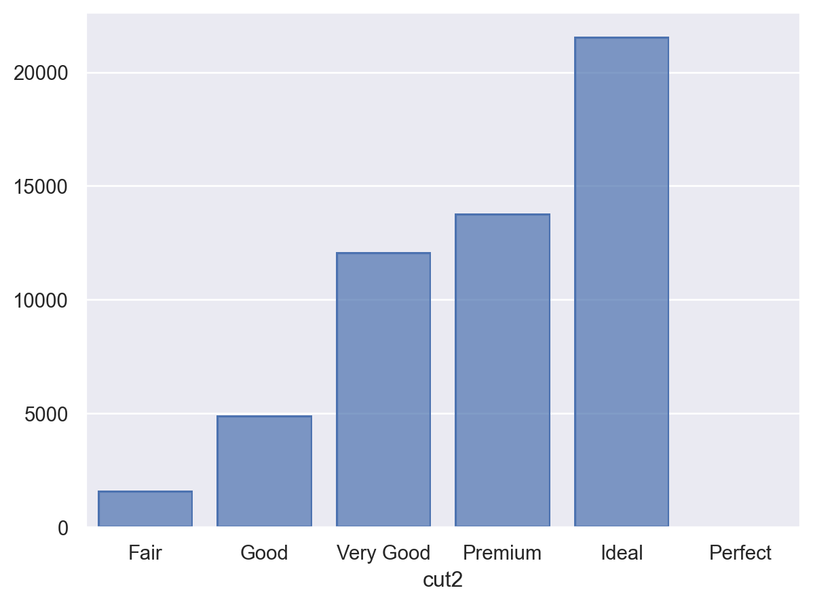
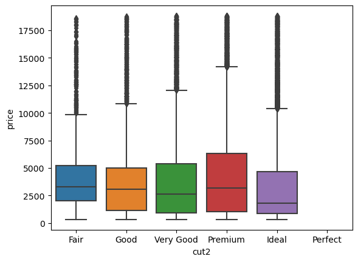
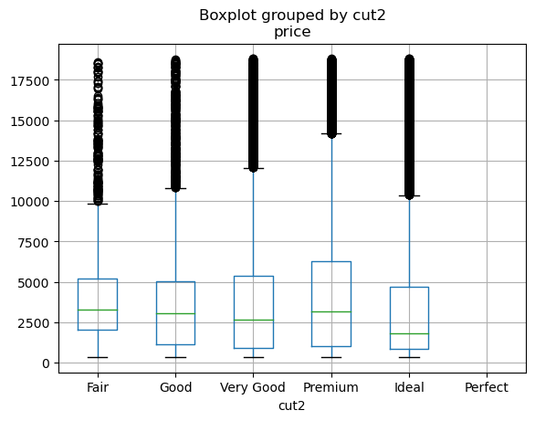

Load Packages
# numerical calculation & data frames
import numpy as np
import pandas as pd
# visualization
import matplotlib.pyplot as plt
import seaborn as sns
import seaborn.objects as so
# statistics
import statsmodels.api as smR for Data Science by Wickham & Grolemund
# numerical calculation & data frames
import numpy as np
import pandas as pd
# visualization
import matplotlib.pyplot as plt
import seaborn as sns
import seaborn.objects as so
# statistics
import statsmodels.api as sm# pandas options
pd.set_option("mode.copy_on_write", True)
pd.options.display.precision = 2
pd.options.display.float_format = '{:.2f}'.format # pd.reset_option('display.float_format')
pd.options.display.max_rows = 8
# Numpy options
np.set_printoptions(precision = 2, suppress=True)# import a dataset
diamonds = sm.datasets.get_rdataset("diamonds", "ggplot2").data
diamonds2 = diamonds.copy() # unmodified copyCategorical type in pandasMcKinney’s/Categorical data
pandas/Categorical data
pd.Categorical(diamonds["cut"]) # defualt: alphabetical order['Ideal', 'Premium', 'Good', 'Premium', 'Good', ..., 'Ideal', 'Good', 'Very Good', 'Premium', 'Ideal']
Length: 53940
Categories (5, object): ['Fair', 'Good', 'Ideal', 'Premium', 'Very Good']diamonds2["cut"].astype("category") # defualt: alphabetical order0 Ideal
1 Premium
2 Good
3 Premium
...
53936 Good
53937 Very Good
53938 Premium
53939 Ideal
Name: cut, Length: 53940, dtype: category
Categories (5, object): ['Fair', 'Good', 'Ideal', 'Premium', 'Very Good']diamonds["cut"] = pd.Categorical(
diamonds["cut"],
categories=["Fair", "Good", "Very Good", "Premium", "Ideal"],
ordered=True
)# .astype() method를 쓰려면,
from pandas.api.types import CategoricalDtype
cat_type = CategoricalDtype(
categories=["Fair", "Good", "Very Good", "Premium", "Ideal"], ordered=True
)
diamonds["cut"] = diamonds["cut"].astype(cat_type)diamonds["cut"]0 Ideal
1 Premium
2 Good
3 Premium
...
53936 Good
53937 Very Good
53938 Premium
53939 Ideal
Name: cut, Length: 53940, dtype: category
Categories (5, object): ['Fair' < 'Good' < 'Very Good' < 'Premium' < 'Ideal']diamonds["cut"].cat.categoriesIndex(['Fair', 'Good', 'Very Good', 'Premium', 'Ideal'], dtype='object')diamonds["cut"].cat.codes0 4
1 3
2 1
3 3
..
53936 1
53937 2
53938 3
53939 4
Length: 53940, dtype: int8Category 타입의 변수는 데이터에 없는 level을 포함할 수 있음.
diamonds["cut2"] = pd.Categorical(
diamonds["cut"],
categories=["Fair", "Good", "Very Good", "Premium", "Ideal", "Perfect"],
ordered=True
)diamonds.value_counts("cut2", sort=False)cut2
Fair 1610
Good 4906
Very Good 12082
Premium 13791
Ideal 21551
Perfect 0
Name: count, dtype: int64diamonds.groupby("cut2")["price"].mean()cut2
Fair 4358.76
Good 3928.86
Very Good 3981.76
Premium 4584.26
Ideal 3457.54
Perfect NaN
Name: price, dtype: float64.value_count(), .groupby(), min(), max()
시각화 library: seaborn, pandas
diamonds.value_counts("cut", sort=False)cut
Fair 1610
Good 4906
Very Good 12082
Premium 13791
Ideal 21551
Name: count, dtype: int64diamonds.value_counts("cut", sort=False).indexCategoricalIndex(['Fair', 'Good', 'Very Good', 'Premium', 'Ideal'], categories=['Fair', 'Good', 'Very Good', 'Premium', 'Ideal'], ordered=True, dtype='category', name='cut')# group keys
diamonds.groupby("cut2")["price"].mean()cut2
Fair 4358.76
Good 3928.86
Very Good 3981.76
Premium 4584.26
Ideal 3457.54
Perfect NaN
Name: price, dtype: float64# min(), max()
diamonds["cut"].min()'Fair'# sort_values()
diamonds.sort_values("cut") carat cut color clarity depth table price x y z cut2
4654 1.00 Fair F SI1 66.70 57.00 3669 6.07 5.99 4.02 Fair
53338 1.20 Fair G I1 64.40 55.00 2655 6.77 6.61 4.31 Fair
40890 0.50 Fair E SI1 65.00 58.00 1176 4.98 4.90 3.21 Fair
9129 0.90 Fair F VS2 59.50 67.00 4536 6.29 6.24 3.73 Fair
... ... ... ... ... ... ... ... ... ... ... ...
29309 0.34 Ideal F SI2 61.90 57.00 438 4.50 4.52 2.79 Ideal
29308 0.25 Ideal G VS1 62.70 54.00 438 4.05 4.08 2.55 Ideal
29339 0.31 Ideal G VS2 59.10 57.00 698 4.48 4.45 2.64 Ideal
53939 0.75 Ideal D SI2 62.20 55.00 2757 5.83 5.87 3.64 Ideal
[53940 rows x 11 columns]Seaborn도 Categorical type을 지원함.
left = so.Plot(diamonds, x="cut2").add(so.Bar(), so.Count())
right = so.Plot(diamonds2, x="cut").add(so.Bar(), so.Count())

sns.boxplot(data=diamonds, x="cut2", y="price")<Axes: xlabel='cut2', ylabel='price'>
diamonds.boxplot("price", by="cut2")<Axes: title={'center': 'price'}, xlabel='cut2'>
연속변수를 카테고리화하여 범주형 변수로 변환하여 분석
pd.cut(), pd.qcut()
bins, precision, labels # 동일한 길이의 10개 구간
(
diamonds.assign(carat_cat = lambda x: pd.cut(x.carat, 10))
.value_counts("carat_cat")
)carat_cat
(0.195, 0.681] 25155
(0.681, 1.162] 18626
(1.162, 1.643] 7129
(1.643, 2.124] 2349
...
(3.086, 3.567] 6
(3.567, 4.048] 5
(4.048, 4.529] 2
(4.529, 5.01] 1
Name: count, Length: 10, dtype: int64# 나누는 구간을 지정
(
diamonds.assign(carat_cat = lambda x: pd.cut(x.carat, [0, 1, 3, 5]))
.value_counts("carat_cat")
)carat_cat
(0, 1] 36438
(1, 3] 17470
(3, 5] 31
Name: count, dtype: int64# 동일한 갯수의 관측치를 포함하도록 하는 10개의 구간; 구간의 길이가 모두 다름
(
diamonds.assign(carat_cat = lambda x: pd.qcut(x.carat, 10))
.value_counts("carat_cat", sort=False)
)carat_cat
(0.199, 0.31] 6452
(0.31, 0.35] 4606
(0.35, 0.42] 5421
(0.42, 0.53] 5106
...
(0.9, 1.01] 5078
(1.01, 1.13] 4573
(1.13, 1.51] 6052
(1.51, 5.01] 4635
Name: count, Length: 10, dtype: int64carat_cat = pd.cut(diamonds["carat"], 3)
carat_cat.dtype
# CategoricalDtype(categories=[(0.195, 1.803], (1.803, 3.407], (3.407, 5.01]], ordered=True)
carat_cat.cat.categories
# IntervalIndex([(0.195, 1.803], (1.803, 3.407], (3.407, 5.01]], dtype='interval[float64, right]')